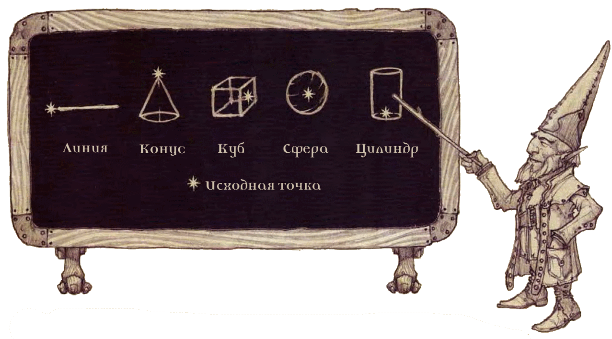
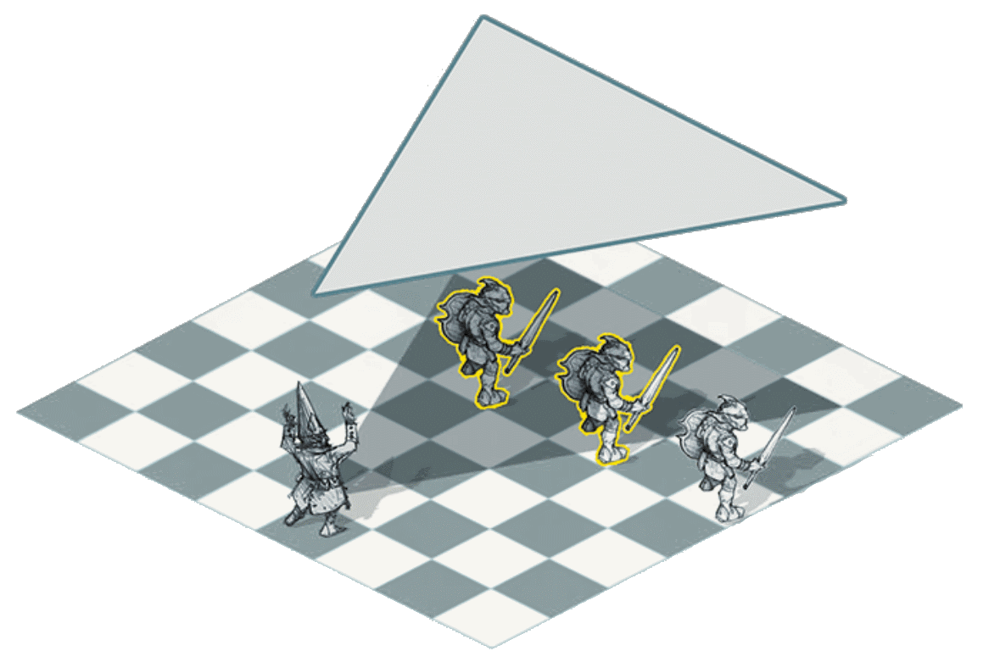
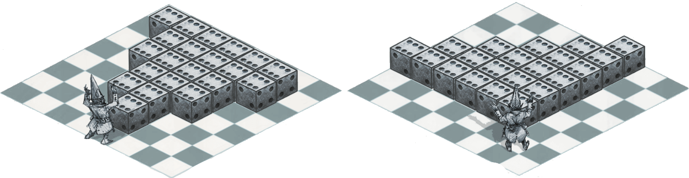
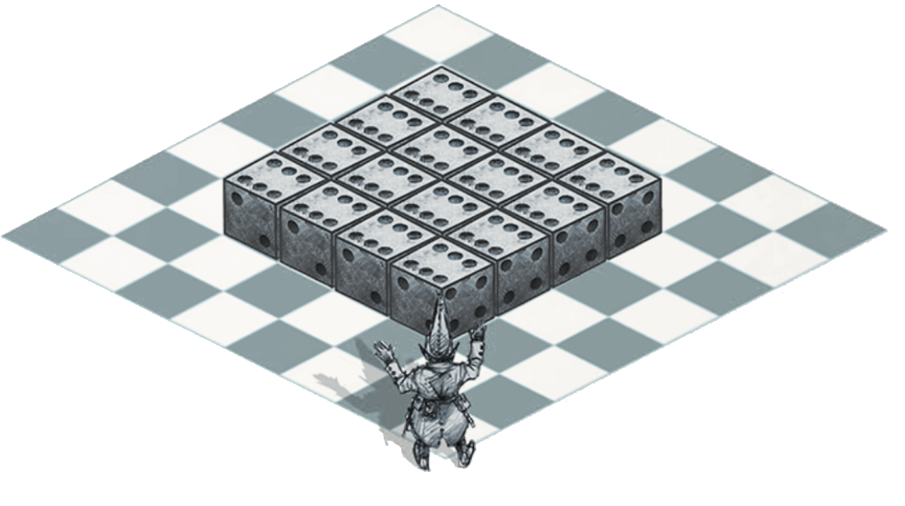
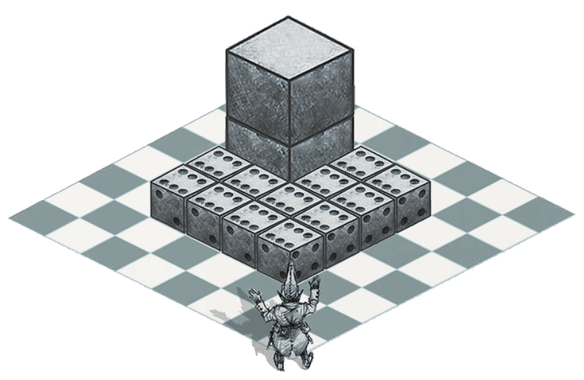
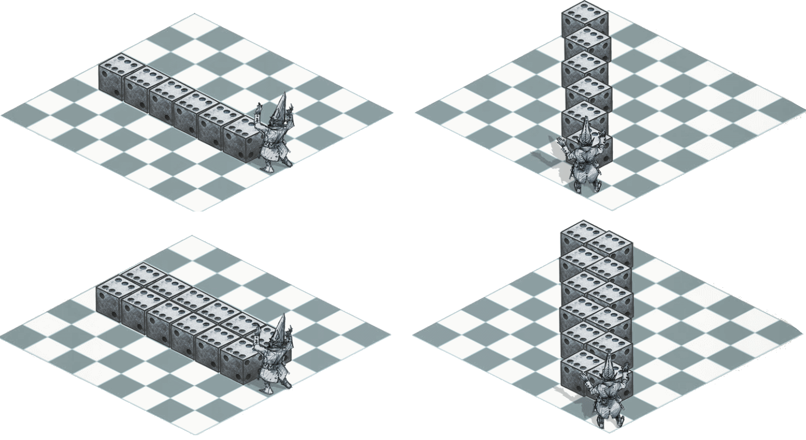
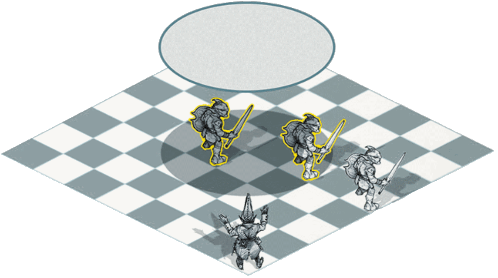

- Источник: «Player's Handbook»
Магия пронизывает миры D&D, и чаще всего проявляется в виде заклинаний. В данной статье приводятся правила по использованию заклинаний. Персонажи разных классов по-разному изучают и подготавливают заклинания, чудовища тоже используют заклинания по-своему.
Однако, какое бы происхождение не было у заклинания, оно подчиняется описанным ниже правилам.
Что такое заклинание?
Заклинание это единый магический эффект, магическая энергия, пропитывающая мультивселенную, сформированная в конкретное обличье. Накладывая заклинание, персонаж бережно хватает невидимые пряди сырой магии, пропитывающей мир, переплетает их особым узором, заставляет вибрировать, а потом отпускает, вызывая желаемый эффект — чаще всего всё это происходит за доли секунды.
Заклинания могут быть универсальными инструментами, оружием, и даже защитой. Они могут причинять и устранять урон, накладывать и снимать состояния, вытягивать жизненную энергию и возвращать к жизни.
За ход истории мультивселенной было создано бессчётное множество заклинаний, и большая их часть давно забыта. Часть из них записана в ветхих книгах, лежащих в древних руинах, или заперта в сознании мёртвых богов. Они могут быть повторно изобретены персонажем, накопившим нужную энергию и мудрость для понимания.
Уровень заклинания
У каждого заклинания есть уровень, от 0-го до 9-го.
Уровень заклинания это примерный индикатор того, насколько оно сильно. Скромная (но всё равно впечатляющая) волшебная стрела [magic missile] — 1-го уровня, а всемогущее исполнение желаний [wish] — 9-го уровня. Заговоры — простые, но мощные заклинания, которые персонажи могут накладывать без особых усилий, имеют уровень 0. Чем выше уровень заклинания, тем больший уровень должен быть у заклинателя, собирающегося его использовать.
Уровень заклинания и уровень персонажа не связаны напрямую. Обычно чтобы накладывать заклинания 9-го уровня, персонажу нужно быть не 9-го, а по меньшей мере 17-го уровня.
Известные и подготовленные заклинания
Перед тем, как заклинатель сможет использовать заклинание, он должен зафиксировать его в сознании, или получить доступ к заклинанию, хранящемуся в магическом предмете. Представители некоторых классов, включая бардов и чародеев, обладают ограниченным набором заклинаний, который всегда находится в их сознании. То же самое справедливо для большинства практикующих магию чудовищ. Другие заклинатели, такие как жрецы и волшебники, подготавливают свои заклинания.
Накладывание заклинаний в доспехе
Из-за необходимости поддерживать концентрацию и совершать аккуратные движения, вы должны владеть доспехом, в котором собираетесь накладывать заклинание. В противном случае ваши движения слишком стеснены, и вы теряете возможность использовать заклинания.
У всех классов этот процесс выглядит по-разному; подробности смотрите в их описании.
В любом случае, количество заклинаний, которое заклинатель может удерживать в сознании, зависит от его собственного уровня.
Ячейки заклинаний
Вне зависимости от того, сколько заклинаний знает или подготовил заклинатель, он может использовать ограниченное их количество, после чего ему вновь понадобится отдохнуть. Манипулирование тканью магии и пропускание через себя её энергии выматывает физически и умственно, особенно если заклинание высокоуровневое.
Таким образом, в описании всех классов заклинателей (колдун — исключение) есть таблица, показывающая, сколько ячеек заклинаний того или иного уровня заклинаний у персонажа есть на данном уровне. Например, у волшебницы 3-го уровня Умары есть четыре ячейки заклинаний 1-го уровня и две ячейки 2-го уровня.
Когда персонаж накладывает заклинание, он тратит ячейку с уровнем, не меньше, чем уровень заклинания, как будто бы «заполняя» ячейку заклинанием. Можете считать ячейку заклинания ёмкостью определённого размера — ячейка 1-го уровня маленькая, а ячейки более высоких уровней большие.
Заклинание 1-го уровня поместится в ячейку любого размера, но заклинание 9-го уровня поместится только в ячейку 9-го уровня. Таким образом, когда Умара накладывает волшебную стрелу [magic missile], заклинание 1-го уровня, она тратит одну из четырёх ячеек 1-го уровня, и их останется только три.
Окончание продолжительного отдыха восстанавливает все потраченные ячейки заклинаний.
У некоторых персонажей и чудовищ есть особые умения, позволяющие использовать заклинания без использования ячеек. Примерами могут послужить монах, следующий Пути четырёх стихий, колдун, выбравший особые воззвания, и чудовище «исчадие преисподней» из Девяти Преисподних.
Накладывание заклинания с увеличенным уровнем
Если заклинатель накладывает заклинание, используя ячейку с уровнем, превышающим уровень заклинания, заклинание при этом считается имеющим увеличенный уровень. Например, если Умара накладывает волшебную стрелу [magic missile], используя одну из своих ячеек 2-го уровня, это будет волшебная стрела [magic missile] 2-го уровня. Фактически, заклинание усиливается, заполняя предоставленную ему ячейку.
Некоторые заклинания, такие как волшебная стрела [magic missile] и лечение ран [cure wounds], обладают усиленными эффектами, когда накладываются с увеличенным уровнем, что указано в их описании.
Вариант: Очки заклинаний
Можно изменить класс, поменяв его методику использования заклинаний. При помощи этой системы персонаж с умением «Использование заклинаний» использует не ячейки заклинаний, а очки заклинаний. Очки заклинаний дают заклинателю большую гибкость ценой больших расчётов.
В этом варианте у каждого заклинания есть стоимость в очках, зависящая от его уровня. В приведённой ниже таблице указана стоимость в очках заклинаний ячеек с 1 по 9 уровень. Заговоры не требуют ячеек, и потому не стоят очков заклинаний.
Вместо того, чтобы получать от умения «Использование заклинаний» ячейки заклинаний, вы получаете очки заклинаний. Вы тратите очки заклинаний для создания ячейки заклинаний желаемого уровня, а потом используете эту ячейку для накладывания самого заклинания. Очков заклинаний не может быть меньше 0, и вы восстанавливаете все очки заклинаний, когда оканчиваете продолжительный отдых.
Заклинания с уровнем выше 5 накладывать сложно. Вы можете с помощью очков заклинаний создать по одной ячейке заклинаний уровня 6 и выше. Вы не можете создать ещё одну ячейку с таким же уровнем, что уже была создана, пока не окончите продолжительный отдых.
Количество очков заклинаний, которые вы можете потратить, зависит от вашего уровня заклинателя, как показано в таблице «очки заклинаний в зависимости от уровня». Ваш уровень также определяет максимальный уровень заклинаний, который вы можете накладывать. Даже если у вас достаточно очков, ячейку с уровнем выше максимального вы не создадите.
Эта таблица распространяется на бардов, волшебников, друидов, жрецов и чародеев. Для изобретателей, паладинов и следопытов уровень персонажа считается уменьшенным вдвое. Для воина (мистический рыцарь) и плута (мистический ловкач) уровень персонажа делится на три.
Эту же систему можно применять к чудовищам, накладывающим заклинания за счёт ячеек заклинаний, но делать это не рекомендуется, так как отслеживать очки заклинаний чудовищ может быть сложно.
СТОИМОСТЬ В ОЧКАХ ЗАКЛИНАНИЙ
| Уровень заклинания |
Стоимость в очках |
| 1 | 2 |
| 2 | 3 |
| 3 | 5 |
| 4 | 6 |
| 5 | 7 |
| 6 | 9 |
| 7 | 10 |
| 8 | 11 |
| 9 | 13 |
ОЧКИ ЗАКЛИНАНИЙ В ЗАВИСИМОСТИ ОТ УРОВНЯ
| Уровень класса |
Очки заклинаний |
Макс. уровень заклинаний |
| 1 | 4 | 1 |
| 2 | 6 | 1 |
| 3 | 14 | 2 |
| 4 | 17 | 2 |
| 5 | 27 | 3 |
| 6 | 32 | 3 |
| 7 | 38 | 4 |
| 8 | 44 | 4 |
| 9 | 57 | 5 |
| 10 | 64 | 5 |
| 11 | 73 | 6 |
| 12 | 73 | 6 |
| 13 | 83 | 7 |
| 14 | 83 | 7 |
| 15 | 94 | 8 |
| 16 | 94 | 8 |
| 17 | 107 | 9 |
| 18 | 114 | 9 |
| 19 | 123 | 9 |
| 20 | 133 | 9 |
Заговоры
Заговоры это заклинания, которые накладываются очень легко, без использования ячеек заклинаний и подготовки. Постоянное использование закрепило их в сознании заклинателя и даровало магию, необходимую для постоянного воплощения их эффектов. Уровень заговоров всегда 0-й.
Если ваш заговор усиливается с уровнем, усиление основывается на уровне персонажа, а не уровне в каком-либо классе.
Ритуалы
У некоторых заклинаний есть специальное ключевое слово: «ритуал». Такое заклинание можно использовать по обычным правилам использования заклинаний, или же использовать его как ритуал.
Ритуальная версия накладывается на 10 минут дольше, чем обычно. Она не использует ячейку заклинания, а значит, ритуальную версию заклинания нельзя использовать с увеличенным уровнем.
Для использования заклинания в качестве ритуала заклинатель должен иметь умение, позволяющее делать это. У жрецов и друидов, например, есть такое умение.
Заклинатель должен при этом иметь это заклинание подготовленным или просто иметь его в списках известных заклинаний, если в ритуальном умении не сказано обратное, как, например, у волшебника.
Накладывание заклинания
Когда персонаж накладывает заклинание, используются единые правила, каким бы ни был его класс или эффект заклинания.
Описание каждого заклинания начинается с блока информации, включающего название заклинания, его уровень, школу магии, время накладывания, дистанцию, компоненты и длительность. Дальше описываются эффекты заклинания.
Время накладывания
Большинство заклинаний накладываются действием, но некоторые накладываются бонусным действием, реакцией, или же требуют долгого времени.
Бонусное действие
Заклинания, накладываемые бонусным действием, особенно быстры. Для накладывания такого заклинания вы должны в свой ход использовать бонусное действие, при условии, что в этом ходу ещё не совершали бонусных действий. В этом ходу вы не можете накладывать другие заклинания, за исключением заговоров со временем накладывания «1 действие».
Реакция
Некоторые заклинания накладываются реакцией. Эти заклинания активируются за считанные доли секунды, и накладываются в ответ на определённые события. Если заклинание может быть наложено в качестве реакции, в описании будет сказано, когда именно вы можете это сделать.
Долгое накладывание
Некоторые заклинания (в том числе заклинания, активированные в качестве ритуалов) требуют больше времени на накладывание: от нескольких минут до нескольких часов. Если вы используете заклинание со временем накладывания больше одного действия или реакции, вы должны каждый свой ход тратить действие на накладывание этого заклинания, и поддерживать при этом концентрацию (смотрите ниже «Концентрация»). Если концентрация нарушена, заклинание проваливается, но ячейка заклинания не тратится. Если захотите снова наложить это заклинание, придётся начать всё с начала.
Действие подготовка
Если вы подготовили заклинание, вы накладываете его как обычно, но удерживаете энергию, пока не сработает условие. Для того чтобы заклинание можно было подготовить, у него должно быть время накладывания «1 действие», а удерживание магии требует концентрации. Если концентрация прервана, заклинание тратится без всякого эффекта.
Например, если вы концентрируетесь на заклинании паутина [web] и подготавливаете заклинание волшебная стрела [magic missile], заклинание паутина [web] оканчивается, и если вы получите урон до накладывания заклинания волшебная стрела [magic missile] реакцией, ваша концентрация рискует прерваться.
Заклинания, накладываемые бонусным действием
Если вы хотите наложить заклинание с временем накладывания «1 бонусное действие», помните, что вы не можете накладывать никакие другие заклинания до или после него в этот ход, за исключением заговоров со временем накладывания «1 действие».
Дистанция
Цель заклинания должна находиться в пределах дистанции заклинания. Для таких заклинаний как волшебная стрела [magic missile] целью является существо. Для такого заклинания как огненный шар [fireball] целью является точка в пространстве, из которой исходит огненный шар [fireball].
Дистанция большинства заклинаний указана в футах. Некоторые заклинания нацеливаются только на одно существо, которого вы коснётесь (включая вас).
Другие заклинания, такие как щит [shield], действуют только на вас. У таких заклинаний указана дистанция «На себя».
Заклинания, создающие конусы или линии эффекта, исходящие от вас, тоже обладают дистанцией «На себя», что означает, что исходной клеткой эффекта должны быть вы (смотрите ниже «Области воздействия»).
После того как заклинание активировано, его эффекты не ограничиваются его дистанцией, если только в его описании не сказано обратное.
Компоненты
Компоненты заклинания это требования, которые нужно выполнить, чтобы его активировать. В описании заклинания сказано, использует ли оно вербальный (В), соматический (С) или материальный (М) компоненты.
Если вы не можете предоставить хотя бы один из компонентов заклинания, вы не можете его активировать.
Вербальный (В)
Большинство заклинаний требуют произношения таинственных слов. Сами по себе слова не являются источником силы заклинания; просто комбинация звуков с особой тональностью вызывает резонанс в прядях магии, приводя их в движение.
Таким образом, персонаж с кляпом во рту или в области заклинания тишина, не может активировать заклинания с вербальным компонентом.
Соматический (С)
Заклинание может требовать энергичной жестикуляции или замысловатой последовательности телодвижений.
Если у заклинания есть соматический компонент, у заклинателя должна быть свободной хотя бы одна рука для исполнения этих жестов.
Материальный (М)
Накладывание некоторых заклинаний требует наличия особых предметов, указанных в скобках в описании заклинания. Персонаж может использовать мешочек с компонентами или заклинательную фокусировку вместо указанных компонентов. Однако, если для компонента указана цена, у персонажа для накладывания заклинания должен быть именно такой компонент.
Если в заклинании сказано, что материальные компоненты расходуются, заклинатель должен предоставить компоненты для каждого использования этого заклинания.
У заклинателя должна быть одна свободная рука для доступа к материальным компонентам, но это может быть та же самая рука, что используется для выполнения соматического компонента.
Длительность
Длительность заклинания это время, в течение которого это заклинание будет активно. Длительность может измеряться в раундах, минутах, часах и даже годах. Некоторые заклинания указывают, что их эффект длится до тех пор, пока не будет рассеян или уничтожен.
Мгновенная
Многие заклинания мгновенны. Заклинания, причиняющие урон, лечащие, создающие или изменяющие существ или предметы, не могут быть рассеяны, потому что магия возникает на непродолжительное время.
Концентрация
Некоторые заклинания требуют от вас сохранения концентрации для поддерживания магии в активном состоянии. Если вы потеряете концентрацию, такое заклинание оканчивается.
Если заклинание должно поддерживаться концентрацией, это указывается в разделе «Длительность», и там же указывается, сколько можно концентрироваться на нём. Вы можете окончить концентрацию в любое время (действие не требуется).
Нормальная деятельность, такая как перемещение и сражение, не прерывают концентрацию.
Её могут прервать следующие события:
- Накладывание другого заклинания, требующего концентрацию. Вы теряете концентрацию на заклинании, если накладываете другое заклинание, требующее концентрации. Нельзя концентрироваться на двух заклинаниях одновременно.
- Получение урона. Каждый раз, когда вы получаете урон во время концентрации на заклинании, вы должны совершить спасбросок Телосложения для продолжения концентрации. Сл равна 10 или половине причинённого урона, в зависимости от того, что выше. Если вы получаете урон из нескольких источников, например, от стрелы и дыхания дракона, вы совершаете отдельные спасброски для каждого источника урона.
- Недееспособность или смерть. Вы теряете концентрацию на заклинании, если становитесь недееспособным или умираете.
Мастер может также решить, что определённые эффекты окружения, такие как накатившая на корабль волна во время шторма, требуют совершения спасброска Телосложения Сл 10, чтобы сохранить концентрацию на заклинании.
Школы магии
Магические академии делят заклинания на восемь категорий, называемых школами магии. Учёные, в частности волшебники, применяют эти категории абсолютно ко всем заклинаниям, считая, что магия действует одинаково, вне зависимости от того, что является её источником — прилежное изучение или щедрое божество.
Школы магии помогают описывать заклинания; сами по себе они не несут правил, но некоторые правила применяются только к тем или иным школам.
Заклинания Воплощения создают различные эффекты из магической энергии. Это могут быть вспышки огня или молний. Другие используют позитивную энергию для лечения ран.
Заклинания Вызова перемещают предметы и существ из одного места в другое. Некоторые призывают существ и предметы к заклинателю, другие же перемещают заклинателя в другое место. Некоторые заклинания создают предметы и эффекты из ничего.
Заклинания Иллюзии обманывают чувства или сознания других. Они заставляют видеть вещи, которых нет, не замечать вещи, которые есть, слышать не настоящие звуки, или вспоминать то, чего никогда не было. Некоторые иллюзии создают образ, которые видят все, но самые коварные иллюзии помещают изображение прямиком в сознание конкретного существа.
Заклинания Некромантии манипулируют энергиями жизни и смерти. Такие заклинания могут давать дополнительные резервы жизненных сил, забирать жизненные силы у других, создавать нежить, и даже оживлять мертвецов. Создание нежити при помощи таких заклинаний некромантии как восставший труп не является добрым поступком, и только злые персонажи используют это заклинание часто.
Заклинания Ограждения носят защитный характер, хотя у некоторых из них возможно агрессивное использование. Они создают магические барьеры, снимают вредоносные эффекты, причиняют вред нарушителям границ, или изгоняют существ на их родной план существования.
Заклинания Очарования воздействуют на чужое сознание, контролируя поведение существ или влияя на него. Такие заклинания могут заставить врагов считать заклинателя союзником, заставить существо совершить определённые действия, или даже контролировать другое существо как марионетку.
Заклинания Преобразования изменяют свойства существ, предметов или окружения. Они могут сделать врага безвредным существом, увеличить силу союзника, переместить предмет по приказу заклинателя, или усилить врождённые свойства существа к восстановлению, чтобы оно быстрее оправилось от ранения.
Заклинания Прорицания раскрывают информацию, будь то давно забытые тайны, проблески будущего, местонахождение тайников, истина, сокрытая за иллюзией, или видение далёких мест и существ.
Цели
Обычно заклинание требует, чтобы вы выбрали одну или несколько целей, которые и попадут под действие магии заклинания. В описании заклинания сказано, на что оно нацеливается — на существ, предметы, или точку в пространстве (описано ниже).
Если у цели нет воспринимаемого эффекта, существо может вообще не узнать, что было целью заклинания.
Естественно, трещащие молнии легко заметить, но тайные эффекты, такие как попытки прочесть мысли, обычно проходят незамеченными, если в описании заклинания не сказано обратное.
Свободный путь до цели
Чтобы на что-то нацелиться, у вас должен быть свободный путь, поэтому у цели не должно быть полного укрытия.
Если вы создаёте область воздействия в точке, которую не видно из-за препятствия, и между вами и этой точкой есть сплошная преграда, такая как стена, исходная точка возникнет с ближайшей к вам стороны этой преграды.
Нацеливание на себя
Если заклинание нацеливается на любое существо, вы можете выбрать себя, кроме тех случаев, когда существо должно быть враждебным, или когда указано, что это должно быть существо, отличное от вас. Если вы находитесь в области эффекта, наложенного вами же заклинания, вы можете сделать целью себя.
Наблюдая за работой заклинателя (XGE)
Многие заклинания создают очевидные эффекты: огненные взрывы, стены льда, телепортацию и тому подобное. Другие заклинания, такие как очарование личности [charm person], не показывают видимых, слышимых или других ощутимых признаков от эффекта, и могут легко остаться незамеченными кем-то, кто ими не затронут. Как описано выше, вы обычно не знаете, что заклинание было применено, если оно не создаёт видимого эффекта.
Но как насчёт самого действия сотворения заклинания? Возможно ли, чтобы кто-то понял, что в его присутствии колдуют? Чтобы быть замеченным, заклинание должно включать вербальный, соматический или материальный компонент. Форма материального компонента не имеет значения, будь то объект, указанный в описании заклинания, мешочек с компонентами или магическая фокусировка.
Если потребность в компонентах заклинания для колдовства была отброшена с помощью специальных умений, таких как «Неуловимое заклинание» чародея или «Врождённое колдовство», которым обладают многие существа, то заклинание незаметно. Если незаметное сотворение заклинания создаёт видимый эффект, обычно невозможно определить, кто сотворил заклинание, не имея других доказательств.
Определение заклинания (XGE)
Иногда персонаж хочет определить заклинание, которое кто-то творит, или которое уже было сотворено. Он может использовать свою реакцию, чтобы определить заклинание в момент колдовства, или он может использовать действие в свой ход, чтобы определить заклинание по его эффекту.
Если персонаж видит процесс сотворения заклинания, эффект от заклинания или и то, и другое, то он может совершить проверку Интеллекта (Магия) реакцией или действием.
Сл = 15 + уровень заклинания
Если заклинание используется как классовое, и персонаж имеет уровень в этом классе, бросок выполняется с преимуществом. Например, если заклинатель творит заклинание как жрец, у другого жреца есть преимущество на бросок для определения заклинания.
Эта проверка Интеллекта (Магия) отражает тот факт, что для определения заклинания необходимы быстрый ум и знакомство с теорией и практикой сотворения заклинаний. Это справедливо даже для персонажей, чьи колдовские способности основываются на Мудрости или Харизме. Способность использовать заклинания сама по себе не позволяет вам точно определить, что именно делают другие, когда они колдуют.
Недопустимые цели заклинания (XGE)
В заклинании указано, что может заклинатель сделать его целью: существо любого типа, существо определённого типа (например, гуманоид или зверь), объект, область, самого себя или что-то ещё. Но что произойдёт, если заклинание нацелено на то, что не является допустимой целью? Например, кто-то может сотворить заклинание очарование личности [charm person] на существо, которое считается гуманоидом, не зная, что цель на самом деле вампир. Если эта проблема возникнет, то при принятии решений, связанных с ней, используйте следующее правило.
Если вы направляете заклинание на кого-то или что-то, что не может быть целью заклинания, с целью ничего не происходит, но, если вы использовали ячейку заклинания, ячейка тратится. Если заклинание обычно не влияет на цель, которая преуспевает в спасброске, то недопустимая цель автоматически преуспевает в спасброске, даже если она не пыталась (не давайте намёка на то, что существо является недопустимой целью). В противном случае, вы понимаете, что заклинание не оказало влияния на цель.
Области воздействия
Такие заклинания как конус холода [Cone of cold] и огненные ладони [Burning hands] создают область, позволяющую воздействовать сразу на несколько существ.
Описание заклинания определяет область воздействия, которая обычно принимает одну из пяти разных форм: конус, куб, линия, сфера или цилиндр.
У каждой области воздействия есть исходная точка, место, из которого исходит энергия заклинания.
Правила форм определяют, как вы можете размещать исходную точку. Обычно исходная точка это точка в пространстве, но области некоторых заклинаний исходят из существ или предметов.
Эффект заклинания распространяется по прямым линиям из исходной точки. Если до какого-то места в области воздействия нет свободных линий от исходной точки, это место не включается в область воздействия.
Для блокирования таких воображаемых линий препятствие должно предоставлять полное укрытие.

Конус
Конус простирается в выбранном вами направлении из исходной точки. Ширина конуса на том или ином расстоянии от исходной точки равна расстоянию от этого места до исходной точки. Область воздействия конуса указывает его максимальную длину. Исходная точка конуса не включается в область воздействия заклинания, если вы не решите иначе.

Схема 2.1: Шаблон конуса

Схема 2.5: Шаблон конуса
Куб
Вы выбираете исходную точку куба, лежащую на любой из граней кубического эффекта. Для куба указывается длина его ребра. Исходная точка куба не включается в область воздействия заклинания, если вы не решите иначе.

Схема 2.3: Квадратная область с использованием жетонов

Схема 2.4: Квадратная область с полным укрытием
Линия
Линия простирается из исходной точки по прямому пути на расстояние, равное своей длине и покрывает площадь, определяемую её шириной. Исходная точка линии не включается в область воздействия заклинания, если вы не решите иначе.

Схема 2.6: Линия с использованием жетонов
Сфера
Вы выбираете исходную точку сферы, и она исходит из неё. Размер сферы определяется радиусом, а центром будет исходная точка. Исходная точка сферы включается в область воздействия заклинания.
Цилиндр
Исходная точка цилиндра является центром круга определённого радиуса, указанного в описании заклинания. Круг должен быть верхним или нижним основанием цилиндра. Энергия расширяется по прямым линиям из исходной точки до периметра круга, формируя основание. После этого эффект заклинания «выстреливает» вверх или вниз, на расстояние, равное высоте цилиндра.
Исходная точка цилиндра включается в область воздействия заклинания.

Схема 2.2: Шаблон круга
Области воздействия на сетке (XGE)
Выберите исходную точку, которая будет определять область эффекта. После чего следуйте правилам, соответствующим этому виду области как обычно. Если область эффекта имеет форму круга и закрывает хотя бы половину клетки, она оказывает эффект на эту клетку.
Это правило работает, но может требовать оценки области прямо во время игры. Этот раздел предлагает два варианта для определения точного положения области:
метод шаблона и метод жетона. Оба этих метода предполагают, что вы используете сетку и миниатюры в том или ином виде. Поскольку эти методы могут давать разные результаты для количества клеток, на которые распространяется эффект, не рекомендуется использовать их одновременно. Выберите метод, который для вас и ваших игроков будет проще или интуитивно понятнее.
Метод шаблона
Метод шаблона использует двумерные фигуры, которые представляют различные области эффектов. Цель метода – точно проиллюстрировать длину и ширину области на сетке, чтобы не оставалось сомнений в том, какие существа попадают в область эффекта. Вам необходимо сделать эти шаблоны или найти уже готовые.
Изготовление шаблона. Сделать шаблон просто. Возьмите лист бумаги или картона и вырежьте из него форму области эффекта, который вы собираетесь использовать. Каждые 5 футов области равны 1 дюйму [2,54 см] шаблона. Например, сфера радиусом 20 футов, создаваемая заклинанием огненный шар [fireball], имеет диаметр 40 футов, что переведётся в круглый шаблон диаметром 8 дюймов [20,32 см].
Применение шаблона. Чтобы использовать шаблон эффекта по области, наложите его на сетку. Если поле плоское, вы можете просто положить его на поверхность; в ином случае поднесите его над поверхностью и посмотрите, какие из клеток находятся под шаблоном.
Эти клетки будут попадать в область действия. Если миниатюра существа находится в клетке, попадающей в шаблон, эффект затрагивает это существо. Но клетки, находящиеся рядом или соседствующие с областью эффекта, не затрагиваются. Клетка должна быть частично или полностью быть закрытой шаблоном.
Вы также можете использовать этот метод без сетки.
Если вы делаете так, существо попадает под действие эффекта, если любая часть основания миниатюры перекрывается с шаблоном. Когда вы размещаете шаблон, следуйте всем правилам по размещению соответствующей области эффекта, описанным выше. Если область эффекта, такая как конус или линия, исходит от заклинателя, шаблон должен быть размещён так, как того желает заклинатель в рамках правил.
Диаграммы 2.1 и 2.2 иллюстрируют метод шаблона в действии.
Метод жетона
Метод жетона был задуман, чтобы сделать области эффекта более осязаемыми и простыми. Чтобы использовать этот метод, возьмите несколько костей или других предметов, которые будут служить жетонами вашей области эффекта.
Вместо того, чтобы точно представлять формы разных областей эффекта, этот метод предлагает вам способ создавать их угловатые версии на сетке так, как это описано в следующих подразделах.
Использование жетонов. Каждая 5-футовая клетка области эффекта отмечается костью или иным жетоном, который вы располагаете на сетке. Каждый жетон располагается в клетке, а не на пересечении линий.
Если жетон области эффекта находится в клетке, на эту клетку распространяется действие области эффекта.
Вот так вот просто. Диаграммы с 2.3 по 2.6 иллюстрируют метод в действии с применением костей в качестве жетонов.
Круги. Этот метод отображает всё, используя клетки и квадраты, и круглая область эффекта становится квадратной при применении этого метода, будь эта область сферой, цилиндром или радиусом. Например, небесный огонь [flame strike] радиусом 10 футов и, значит, имеющий диаметр 20 футов, выражается в виде квадрата со стороной 20 футов, как это показано на диаграмме 2.3. Диаграмма 2.4 показывает, как в этом случае выглядит область, предоставляющая полное укрытие.
Конусы. Конус представляется рядами жетонов на сетке, распространяющимися от стартовой точки конуса. В рядах клетки добавляются по обеим сторонам или углам, как показано на диаграмме 2.5.
Вот как следует располагать ряды. Начиная с клетки, прилегающей к исходной точке конуса, расположите один жетон. Эта клетка может прилегать к исходной клетке по направлению стороны или по направлению диагонали. В каждом ряду, следующем за первым, вам следует расположить столько же жетонов, сколько и в предыдущем, плюс один дополнительный. Расположите жетоны этого ряда так, чтобы их клетки были смежными с клетками предыдущего ряда. Если конус идёт параллельно стороне исходной точки, вам следует располагать один дополнительный жетон в ряду, помещая его на одном из концов только что созданного ряда (не обязательно выбирать для этого сторону так, как показано на диаграмме 2.5). Продолжайте располагать жетоны таким образом, пока не заполните все ряды конуса.
Линии. Линия может простираться от источника в направлении стороны или диагонали, как показано на диаграмме 2.6.
Спасброски
Во многих заклинаниях указано, что цель может совершить спасбросок для избавления от части эффектов заклинания. В описании заклинания сказано, какая характеристика при этом используется, и что происходит при успешном или провальном спасброске.
Сл противостояния вашим заклинаниям равна 8 + модификатор вашей базовой характеристики + ваш бонус мастерства + все особые модификаторы.
Броски атаки
Некоторые заклинания требуют, чтобы заклинатель совершил бросок атаки, дабы определить, попал ли эффект заклинания по выбранной цели.
Ваш бонус атаки атакой заклинанием равен модификатору вашей базовой характеристики + ваш бонус мастерства.
Большинство заклинаний, требующих броска атаки, совершают дальнобойные атаки. Помните, что вы совершаете броски дальнобойных атак с помехой, если в пределах 5 футов есть враждебное дееспособное существо, видящее вас.
Объединение магических эффектов
Эффекты разных заклинаний складываются, пока их длительность перекрывается. Однако, эффекты одного и того же заклинания, наложенного несколько раз, не складываются. Вместо этого применяется только самый сильный из эффектов (например, дающий больший бонус), пока длительность двух эффектов перекрывает друг друга.
Например, если два жреца наложат благословение [bless] на одну и ту же цель, этот персонаж получит преимущество от этого заклинания только один раз; он не будет бросать две бонусных кости.
Опциональное правило: Персонализация Заклинаний (TCE)
Точно так же, как любой исполнитель наделяет произведение личным стилем, а каждый воин развивает свой боевой стиль через призму своих тренировок, так и заклинатель может использовать магию, для выражения своей индивидуальности. Независимо от того, каким заклинателем вы играете, вы можете изменить косметические эффекты заклинаний вашего персонажа. Возможно, вы хотите, чтобы эффекты заклинаний проявлялись в виде любимого цвета, как напоминание о тренировках у небесного наставника или как демонстрация привязанности ко времени года. Возможности для косметических изменений заклинаний вашего персонажа безграничны. Однако персонализация не может изменить эффект заклинания. Она также не может сделать одно заклинание похожим на другое — вы не можете сделать волшебную стрелу [magic missile] похожей на огненный шар [fireball].
При изменении магии вашего заклинателя подумайте о создании темы — зачастую, чем она шире и универсальнее, тем лучше. Вы можете описывать магию вашего заклинателя, когда захотите, особенно, если это создаёт интересное дополнение к истории. Вы также можете использовать персонализацию для усиления других особенностей вашего персонажа, например, сделать заклинания барда тесно связанными с его любимой формой искусства или связать заклинания жреца с его божеством.
Например, огненный шар [fireball] волшебника, любящего шторм, может быть представлен в виде пылающего облака или вспышек красных молний (без изменения типа урона), в то время как заклинание ускорение [haste] того же волшебника может окутать цель едва заметными грозовыми тучами.
В другом случае руки жреца, служащего богу луны, могут излучать слабый лунный свет, когда он накладывает лечение ран [cure wounds], а его щит веры [shield of faith] может окутывать цель мерцающими полумесяцами.
А друид может выбрать для своей магии тему цветения вишни, что будет выражаться в прорастании нежных ветвей и розовых листьев, когда он накладывает опутывание [entangle] или дубинку [shillelagh], а его огонь фей [faerie fire] может больше походить на летящие лепестки, чем на пламя.
Таблица «Магические темы» предлагает несколько вариантов, которые могут вдохновить вас при персонализации заклинаний вашего персонажа.
Магические темы
| к10 | Тема |
| 1 | Книжные страницы, оригами, перья и чернила, всё это в сопровождении запахов библиотеки и шелеста страниц |
| 2 | Фигуры акул, медуз, осьминогов и других морских обитателей с запахом моря |
| 3 | Еда или посуда, несущие с собой ароматы кухни родины заклинателя |
| 4 | Насыщенный запах меди, сопровождаемый тем, что похоже на дисбаланс гуморов заклинателя |
| 5 | Брызги и мазки акварели, наносимые невидимой кистью |
| 6 | Полупрозрачное оружие, броня, миниатюрные боевые машины и призрачные солдаты |
| 7 | Лучи золотого света, несущие немного тепла и лёгкий ветерок с песком |
| 8 | Шумные животные со скотного двора в сопровождении прелых запахов курятника и конюшни |
| 9 | Проявления глубоких эмоций, таких как легкие оковы меланхолии, ностальгия в оттенках сепии или лирика влюбленных сердец |
| 10 | Крошечные причудливые или жуткие существа из постоянных снов заклинателя, от которых он не может избавиться |
Плетение магии
Миры в мультивселенной D&D — магические места. Всё сущее пропитано магической силой, и потенциальная магия находится в каждом камне, каждом ручье, каждом живом существе, и даже в воздухе. Сырая магия — исходный материал, немая и бездумная воля к существованию, пронизывающая всё вокруг и присутствующая во всех проявлениях энергии.
Смертные не могут формировать эту сырую магию. Но зато они научились использовать ткань магии — своеобразный стык между волей заклинателя и сырой магией.
Заклинатели мира Забытых Королевств называют это Плетением, и называют его воплощением богиню Мистру, хотя разные заклинатели могут называть этот стык и по-другому. Как бы Плетение не называлось, без него сырая магия оказывается недоступной; даже великий архимаг не сможет зажечь свечу при помощи магии там, где Плетение разорвано. Но зато окружённый Плетением заклинатель может уничтожать врагов молниями, перемещаться за миг на сотни километров, и даже воскрешать умерших.
Вся магия зависит от Плетения, хотя разные виды магии по-разному получают к нему доступ. Заклинания волшебников, колдунов, чародеев и бардов обычно называют тайной магией. Эти заклинания полагаются на понимание — осознанное или интуитивное — Плетения. Заклинатель вмешивается в саму структуру Плетения, создавая желаемый эффект. Мистические рыцари и мистические ловкачи тоже используют тайную магию. Заклинания жрецов, друидов, паладинов и следопытов называют божественной магией. Доступ этих заклинателей к Плетению обеспечен божественными силами — богами, обожествлёнными силами природы или cвященными клятвами паладинов.
При создании любого магического эффекта нити Плетения переплетаются и скручиваются, создавая желаемый эффект. Когда персонажи используют заклинания школы Прорицания, такие как обнаружение магии или опознание, они бросают короткий взгляд на Плетение. Такие заклинания как рассеивание магии разглаживают Плетение. Такие заклинания как преграда магии упорядочивают Плетение, чтобы магия огибала определённое место. В местах, где Плетение повреждено или разорвано, магия может действовать непредсказуемо — а может вообще не действовать.
Комментарии
Подскажите, пожалуйста, я правильно понял что на ритуал ячейки заклинаний не расходуются? Что можно провести ритуал даже если ячеек заклинания нет?
...Эта таблица распространяется на бардов, волшебников, друидов, жрецов и чародеев. Для изобретателей, паладинов и следопытов уровень персонажа считается уменьшенным вдвое. Для воина (мистический рыцарь) и плута (мистический ловкач) уровень персонажа делится на три."
А что делать с колдунами? У них в таком варианте всё ещё остаются ячейки или их просто забыли включить в переводе?
Или дайте ссылочку, где можно почитать))
А по таблице мой уровень делится на 3.
7/3 = 2 и 1/3 (в какую сторону идёт округление?). У паладинов,следопытов и т.п. делится на 2 округление в меньшую сторону, а у других не написано.
По этой таблице плут становится заклинатели 2 круга на 9 уровне или округление идёт в большую сторону?
То есть ты считаешься заклинателем 1го уровня на 3, 2го на 4-6, 3го на 7-9, 4го на 10-12, 5го на 13-15, 6го на 16-18, 7го на 19-20.
Спасибо за помощь.
Вопрос про усиление заговоров с уровнем.
***Если ваш заговор усиливается с уровнем, усиление основывается на уровне персонажа, а не уровне в каком-либо классе.*** так написано на сайте, хотя в самой книге игрока таких строк нет, подскажите в какой книге упоминается такое правило?
Значит ли это, что необходим только один компанент из списка?
К примеру, заклинание "Починка" требует 2 куска магнетита, т.е. материальный компонент , а также вербальный и соматический.
Смогу ли я его использовать, если у меня нет магнетита, но я могу сказать нужные слова и сделать нужные жесты?
Рукой, которая занята держанием материального компонента для заклинания, можно совершать соматический компонент для того же заклинания. Это правило материального компонента, который может быть заменён фокусировкой.
По этой причине, если у заклинания есть соматический и нет материального компонента, то правило материального компонента не применимо.
1. Если артефакт (например Посох Мороза) позволяют использовать заклинания - надо ли выполнять требования заклинания по Вербальным и Соматическим компонентам? Или этим "занимается" посох?
2. Такой же вопрос, если способность кастовать Вам даёт раса или предыстория (например заклинание малой иллюзии у Тифлинга Гласия)?
2. А вот сотворение заклинаний от расы или черты этих требований не лишается (даже материальных компонентов).
Вот есть заклинание "Волна грома", которое кастуется на площадь вида "куб с ребром в 15фт, исходящий от вас". И тут у меня возник вопрос: откуда исходит это заклинание у большого существа? Из пересечения четырёх клеток, по центру токена? На одной из четырёх клеток на выбор? Куб масштабируется относительно размер персонажа и становится больше? Как быть, подскажите
у меня возник вопрос, касаемо отыгрыша за заклинателя, а именно, как показать, что ячейки заклинаний подходят к концу или кончились?
ведь не реалистично, если, например, жрец скажет: у меня кончились ячейки, поэтому чудеса на сегодня все
или нет?
заклинатель испытывает усталость? но для усталости есть статус истощения и вот этого не появляется, у него просто кончился бак, будто стрелы в колчане? но тогда почему он востанавливается только на отдыхе, а не просто со временем?
повторюсь, к механикам вопросов нет, но как это отыгрывать, чтобы это было в соответствии с этими механиками, органично сочеталось?
Нарративно вы можете это описывать как угодно: жрец - исчерпал запас божественных даров, волшебник - использовал все заученные на сегодня заклинания, бард - наигрался/напелся.
Можно ли заменить на заговор одну из атак "дополнительной атаки"?
Есть исключение: у волшебника песни клинка своя версия "Дополнительной атаки" которая позволяет ему заменять одну из атак сотворением заговора.
Ещё раз, игра фентезийная, не в малой степень зависящая от фантазии
Например, на 2-м уровне запас равен 10. Вы используете способность и восстанавливаете, например, 4 ХП. Значит у вас в запасе осталось ещё 6 для будущих использований
Я не понимаю зачем нужен бонус атаки заклинания. Куда его деть и как использовать? Типо он равен Характеристика + БМ, но вот что теперь с этим делать? Куда его нужно прибавлять? Если к попаданию, получается попадание заклинанием это = д20 + характеристика + БМ, нужно ещё что ли прибавить бонус попадания или эта формула тоже самое что и "попадание заклинания = д20 + бонус попадания заклинания.
Объясните пожалуйста, а то я запутался, никак ответ найти не могу вы единственная надежда.
И если не затруднит, то я правильно понимаю, что по обычным атакам: попадание атаки = д20+Бонус атаки, а для урона: кубик оружия + характеристика?
Если же совершается рукопашная или дальнобойная атака оружием, даже в рамках заклинания, бросок атаки к20 + мод характеристики + БМ (но БМ только если имеется владение этим оружием), как и обычно.
Просто я думал что она им нужна всегда и что без неё заклинатель ни сможет накладывать заклинания. Тут же я читаю статью про компоненты заклинаний и узнаю, что маг фокусировка может заменить компоненты в скобочках у которых нет стоимости и которые не расходуются.
Получается фокусировка не нужна что бы накладывать заклинания ? 0_0
Если у заклинания нет материального компонента или материальный компонент обязательно нужно предоставлять (расходуемый или со стоимостью), фокусировка бесполезна и может быть даже вредна, занимая руку.
Не чувствую, что они стали от этого значительно сильнее, они все равно безумно редко пользуются бонуской (в основном это только лечащее слово, но оно лечит не так уж и много, многие враги сносят гораздо больше). Так что... дело Мастера. Лично я - не использую такое ограничение и мне это не мешает, маги все еще слабее в одиночку и без союзников боятся лезть вперед :3
Из правил мультикласса:
"Вы определяете, какие заклинания знаете и можете подготовить для каждого класса индивидуально, как если бы других классов просто не было. Например, если вы следопыт 4/волшебник 3, то благодаря первому классу вы знаете три заклинания следопыта 1-го уровня. Как волшебник 3-го уровня вы знаете три заговора волшебника, и в книге заклинаний может быть десять (как минимум) заклинаний волшебника, два из которых могут быть 2-го уровня (получены на 3-м уровне волшебника). Если ваш Интеллект равен 16, вы можете подготовить шесть заклинаний волшебника из книги заклинаний."
То есть, первую атаку нанёс громыхающим клинком, и следующую уже так не могу, могу ли я использовать клинок зеленого пламени (без всплеска действий)?
А также, если я использую всплеск действий, то я могу в этот же ход ещё раз использовать эти заговоры?
Вы можете использовать всплеск действий чтобы в один ход и совершить действие Атака, и сотворить заклинание. Это будет две обычных атаки оружием и одно заклинание.
https://dnd.su/spells/500-tensers-transformation/
Вот есть, например, Расщепление разума [Mind Sliver], который требует от цели спасброска Интеллекта.
И есть, например, Чародей, у которого прямым текстом написано "вы используете Харизму при определении Сл спасбросков от ваших заклинаний Сл спасброска = 8 + ваш бонус мастерства + ваш модификатор Харизмы".
Против какого числа в таком случае цель кидает спасбросок Интеллекта? Против 8 + бонус мастерства чародея + модификатор Харизмы, то есть для самого чародея нет разницы, какой спасбросок требуется от цели?
То есть вот чародей творит Расщепление разума. Так как это чародей, сложность спасброска его заклинания 8 + бонус мастерства + мод Харизмы. Допустим, у нас чародей 1го уровня: бонус мастерства +2, харизма +3. Значит сложность равна 13.
Расщепление говорит что цель должна совершить спасбросок Интеллекта. Значит она должна кинуть к20 + свой модификатор Интеллекта, и если у цели есть владение спасброском Интеллекта, то ещё + бонус мастерства. Если в нашем примере итоговое выпавшее число будет 13 или больше, цель прошла спасбросок.
Но если у заклинания соматический компонент без материального, то вы так сделать не сможете, и придётся освобождать руку, чтобы выполнять ею соматический компонент.
Как все знают, у колдуна особая система магии, а если быть точнее, то ячеек. Это является одним из ключевых моментов класса, вокруг которых всё крутится, но если в вашей игре используются очки заклинаний, то колдун получается еще большим изгоем в этом плане - он и так "выдыхается" самым первым из всех фулкастеров, а окружающие наоборот куда дольше держатся, хоть и сравниваются с колдунов по количеству использований "Высшей магии" (6+ ячейки).
Решения я придумал предельно простое. Начнём с того, что арканумы остаются такими, какие они есть - их использования будут отдельны от очков заклинаний колдуна, тк восстанавливаются они на !прод.отдыхе!, в отличии от самих очков. Что касается остальной магии, то колдун должен иметь следующее количество очков:
На 1 уровне: 2 очка
На 2 уровне: 4 очка
На 3 уровне: 6 очков
На 5 уровне: 10 очков
На 7 уровне: 12 очков
На 9 уровне: 14 очков
На 11 уровне: 21 очко
На 17 уровне: 28 очков
Тоесть, по сути, я просто перевёл доступные на соответствующих уровнях ячейки в очки. Любые эффекты или способности, восстанавливающие ячейки колдуна, как например жезл хранителя договора, восстанавливают количество очков, равное стоимости максимально доступной ячейки. Тоесть если доступна 5 ячейка, то восстанавливает 7 очков заклинаний, а если доступна только 2 ячейка, то восстанавливает 3 очка заклинаний.
Я считаю такое изменение крайне полезным, если за столом уже используются очки заклинаний, тк это даёт колдуну больше гибкости. Условному хексблейду не нужно больше тратить аж 5 ячейку на щит, если хочет его использовать.
На пример заклинание ''Притворная смерть''. Ситуация: Мой персонаж сумел обмануть противника, в том, что персонаж встаёт на их сторону. В качестве доказательства своих намерений, он предлагает наложить на противника заклинание, которое якобы усилит его в бою (Или любая другая польза). Персонаж успешно проходит проверку обмана, и противник верит в то, что его действительно хотят усилить заклинанием. Пользуясь этим, может ли персонаж наложить условную притворную смерть?
( Вы касаетесь согласного существа и погружаете его в каталептическое состояние, не отличимое от смерти. )
Меня больше интересует этот аспект именно с точки зрения правил, ибо что конкретно означает ''Согласное существо'', я не нашёл. Это значит, что существо согласно в целом на накладывание на него заклинания? Или существо согласно именно на какой-то конкретный эффект?